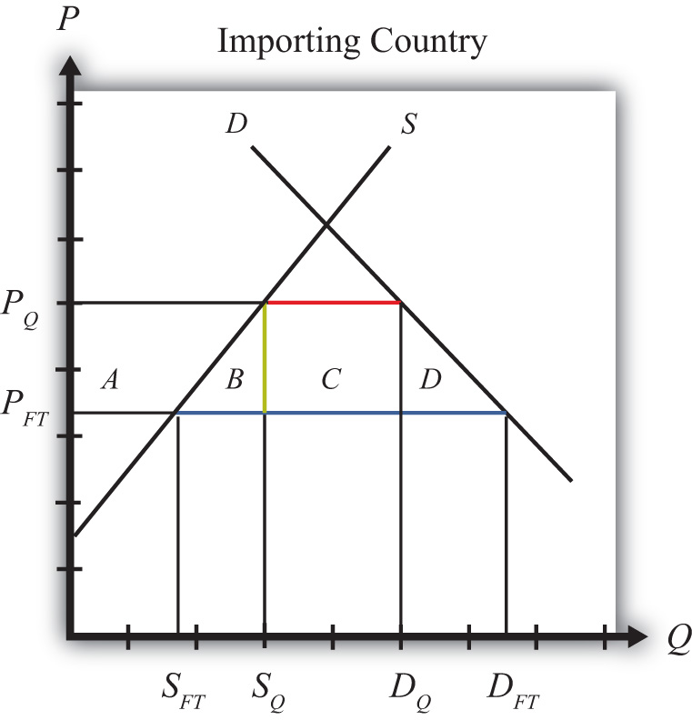

Consider a market in a small importing country that faces an international or world price of PFT in free trade. The free trade equilibrium is depicted in Figure 7.27 "Welfare Effects of a Quota: Small Country Case", where PFT is the free trade equilibrium price. At that price, domestic demand is given by DFT, domestic supply by SFT, and imports by the difference, DFT − SFT (the blue line in the figure).
Suppose an import quota is set below the free trade level of imports. A reduction in imports will lower the supply on the domestic market and raise the domestic price. In the new equilibrium, the domestic price will rise to the level at which import demand equals the value of the quota. Since the country is small, there will be no effect on the world price, which will remain at PFT.
In Figure 7.27 "Welfare Effects of a Quota: Small Country Case", if the quota is set equal to (the red line segment), then the price will have to rise to PQ.
Figure 7.27 Welfare Effects of a Quota: Small Country Case
Table 7.8 "Welfare Effects of an Import Tariff" provides a summary of the direction and magnitude of the welfare effects to producers, consumers, and the recipients of the quota rents in the importing country. The aggregate national welfare effects are also shown.
Table 7.8 Welfare Effects of an Import Tariff
| Importing Country | |
|---|---|
| Consumer Surplus | − (A + B + C + D) |
| Producer Surplus | + A |
| Quota Rents | + C |
| National Welfare | − B − D |
Refer to Table 7.8 "Welfare Effects of an Import Tariff" and Figure 7.27 "Welfare Effects of a Quota: Small Country Case" to see how the magnitudes of the changes are represented.
Welfare effects on the importing country’s consumers. Consumers of the product in the importing country are worse off as a result of the quota. The increase in the domestic price of both imported goods and the domestic substitutes reduces consumer surplus in the market.
Welfare effects on the importing country’s producers. Producers in the importing country are better off as a result of the quota. The increase in the price of their product increases producer surplus in the industry. The price increase also induces an increase in the output of existing firms (and perhaps the addition of new firms), an increase in employment, and an increase in profit, payments, or both to fixed costs.
Welfare effects on the quota rents. Who receives the quota rents depends on how the government administers the quota.
Welfare effects on the importing country. The aggregate welfare effect for the country is found by summing the gains and losses to consumers, producers, and the domestic recipients of the quota rents. The net effect consists of two components: a negative production efficiency loss (B) and a negative consumption efficiency loss (D). The two losses together are referred to as “deadweight losses.”
Because there are only negative elements in the national welfare change, the net national welfare effect of a quota must be negative. This means that a quota implemented by a small importing country must reduce national welfare.
Generally speaking, the following are true:
Consider the following trade policy action (applied by the domestic country) listed along the top row of the table below. In the boxes, indicate the effect of the policy on the variables listed in the first column. Use a partial equilibrium model to determine the answers. You do not need to show your work. Assume that the policy does not begin with, or result in, prohibitive trade policies. Also assume that the policy does not correct for market imperfections or distortions. Use the following notation:
+ the variable increases
− the variable decreases
0 the variable does not change
A the variable change is ambiguous (i.e., it may rise, it may fall)
Table 7.9 Import Quota Effects
| Import Quota (Administered by Giving Away Quota Tickets) by a Small Country | |
|---|---|
| Domestic Price | |
| Domestic Consumer Welfare | |
| Domestic Producer Welfare | |
| Domestic Government Revenue | |
| Domestic National Welfare | |
| Foreign Price | |
| Foreign Consumer Welfare | |
| Foreign Producer Welfare | |
| Foreign National Welfare |